National Institute on Drug Abuse

The National Institute on Drug Abuse (NIDA) serves as the primary federal organization dedicated to advancing scientific research on drug use and addiction. Its mission is to propel scientific understanding of drug use and addiction and leverage this knowledge to enhance individual and public health by:
-
Strategically promoting and conducting foundational, clinical, and epidemiological studies on drug use, its impacts, and the underlying neurobiological, behavioral, and social factors involved.
-
Facilitating the translation, implementation, and dissemination of research findings to improve substance use disorder (SUD) prevention and treatment, mitigate the harms associated with drug use, inform policy decisions, raise public awareness of addiction as a treatable chronic illness, and combat stigma.
In line with this mission, NIDA works to ensure that the following research priorities are addressed across institute programs and initiatives:
NIDA also works to ensure that cross-cutting priorities are reflected across institute programs and initiatives, including:
-
Training The Next Generation of Scientists
-
Identifying and Developing Approaches To Reduce Stigma
-
Understanding Sex, Sexual Orientation, and Gender Differences
-
Identifying and Developing Approaches To Reduce Health Disparities
-
Understanding Interactions Between Substance Use, HIV, and Other Comorbidities
-
Leveraging Data Science and Analytics to Understand Real-World Complexity
-
Developing Personalized Interventions Informed By People With Lived Experience